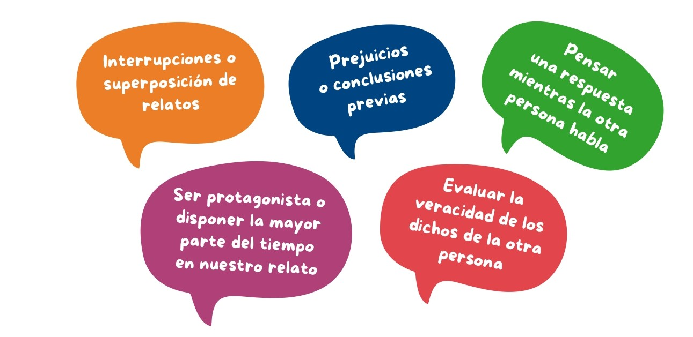

Fuente: Instagram - Subsecretaría de Fortalecimiento Institucional (@sficordoba)
Desde una conversación presencial con un/a docente, una llamada telefónica con algún familiar o una reunión con el equipo directivo, para escuchar y lograr una comprensión integral y empática del mensaje que nos transmiten, es conveniente evitar:

Por el contrario, podemos ejercer una buena escucha si:
☝🏻Asentimos con la cabeza, manteniendo un contacto visual directo y utilizando expresiones tales como “ya veo” o “entiendo”, ya que demostraremos interés y entendimiento.
☝🏻Repasamos lo transmitido con nuestras propias palabras para verificar lo que hemos comprendido y descartar posibles malos entendidos o datos erróneos.